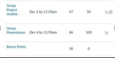

Project one: Functioning Solid Works backhoe design for a final assignment. In this project I worked with a team to design a backhoe with functioning and moving parts that met a realistic weight and functionality. From this project, I learned that utilizing a team to its max resulted in the best possible outcome. I also realized that communication was key in getting things done in a timely manner. I would not do this project differently because it was the first major project that taught me how to use a CAD software. The only material I used was Solid Works.
Project Two: I was a part of a team to design the perfect marble course that would incorporate many moving parts and finally release a sliding book. This project was my first hands on experience in a workshop. This project taught me I had to be very careful when working with tools. The biggest weakness I had in this project was thinking I knew how to design the course myself making it harder to work in a group. If I Could redo this project I would definitely work better with a team seeing that we could have made an even better course. The Materials I used were standard workshop drills, wood, electric car, and of course the marble. This project took a lot of design planning and draw ups. In the end, my team and I got an A on the project.

Project Three: I had to come up with a design and pitch it in a simulated “shark tank” feel to different professors. The winning team would get extra bonus points if all three of the sharks voted on it. For the project, I came up with a heating shelter that would help with natural disasters. I designed it so that a 4-person family could fit in it. It was 7 feet on each edge and weighed 350lbs so that it was stable during windstorms. The walls were also designed to be a quarter of an inch thick to protect from unwanted animals. This project taught me that I have to be creative when coming up with designs and that engineering is a lot of thinking strategically so that I can mass produce with a low cost. My biggest weakness was the creative aspect to the project seeing that my creativity lacks a little bit. I did not use any materials since producing an actual shelter would cost a lot of money. However, I drew up many designs. In the end I got all three sharks to bite and won the bonus points.